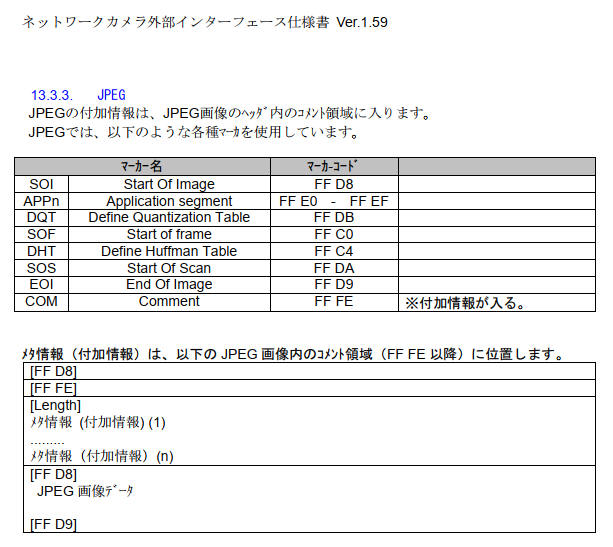
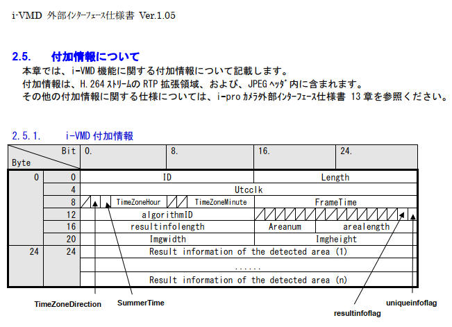
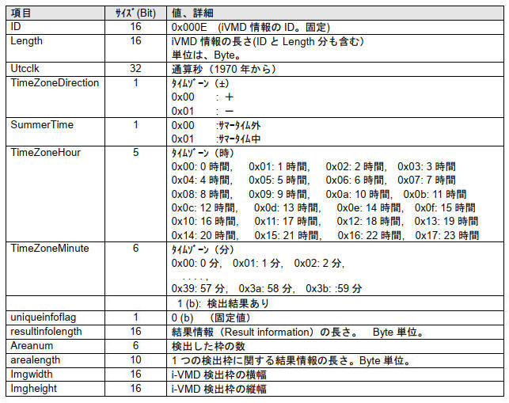
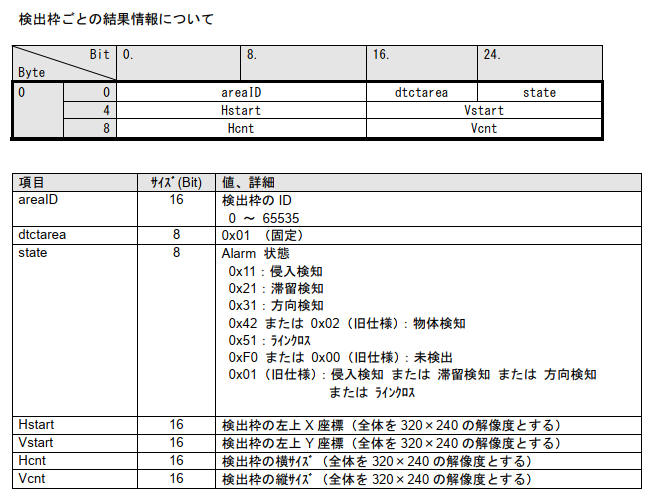
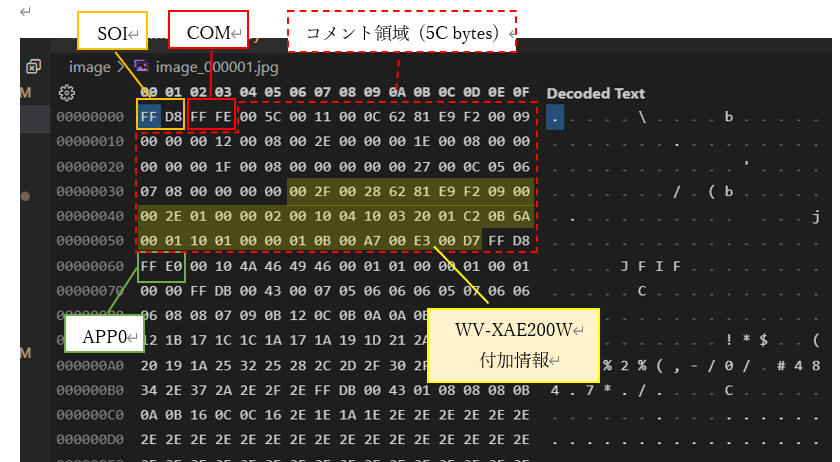

i-PRO の監視カメラ i-PRO mini (WV-S7130W) を入手したので、JPEG 形式で映像取得して遊んでみます。
ここではAI機能拡張ソフトウェア (WV-XAE200W) をインストールして遊んでみます。
製品紹介ページ：
AI機能拡張ソフトウェアから WV-XAE200W (AI動体検知アプリケーション)を入手して、i-PRO カメラへインストールします。
インストール済みの場合は、最新ファームウェアへアップデートします。
1. 最新版ファームウェアを入手（ダウンロード）
下記あたりから最新版ファームウェアを入手します。
※本書記載時点の最新版は v2.20 でした。

2. カメラへインストール
カメラを起動してブラウザから接続します。
「設定」>「ソフトウェア管理」 を開きます。
どうやら AI-VMD と AIプライバシーガード の２つはプレインストール済みのようです。
でも最新版ではなさそうなので、上記で取得した最新版へアップデートしてみます。

「ファイルの選択」>「AI-VMDをバージョンアップする」>「実行」 を順にクリックします。
選択するファイルは *.ext です。ここでは「XAE200_v220.ext」というファイルを選択しています。

こんな確認画面を表示するので、［OK］ボタンをクリックします。

ファームウェアアップデート中の画面です。

これで最新版(v2.20)へアップデートできました。

で「ライブ画」を表示してみます。
ちゃんと私を「HUMAN」として見つけてくれました。

資料[1]によると JPEG, RTSP ともにパケットに AI 認識結果が記録されているようです。
私の技量では RTSP からこの情報を取り出すのは難があるので、JPEG から取り出しすることにチャレンジしてみます。
JPEG ヘッダのコメント領域に記録されているということなので、ここから情報を取り出してみます。
いきなりカメラと接続してチャレンジするのは大変なので、まずは静止画（JPEG）ファイルを取得し、これをバイナリエディタなどで実際のデータ構造を確認しながら方針や実現方法などを検討していきたいと思います。
| 言語 : | Python, | 3.10.4 |
| OS : | Windows 11 home, | 21H2 |
(1)
「JPEGで画像を取得する - 5.連番のJPEGファイルで保存する」「MJPEGで画像を取得する - 5.連番のJPEGファイルで保存する」に記載の方法を使って、WV-XAE200W を動作している状態の JPEG ファイルをPCに保存します。
(2)
資料[1]、JPEGファイル構造の資料[3]、 (1)で保存したファイルをバイナリエディタで表示した結果を見比べて確認などしていきます。
まずは仕様確認です。
資料[1]の「i-proカメラ外部インタフェース仕様書ver1.59.pdf - 13.3.3. JPEG」に下図のように記載されています。

ポイント
JPEGファイルは SOI(0xFFD8) で始まる
JPEGファイルは EOI(0xFFD9) で終わる
付加情報はコメント領域に記録されている（COM(0xFFFE)）
資料[1]の「i-VMD_commandインターフェース仕様書 ver1.05.pdf - 2.5. 付加情報について」に下図のように記載されています。



(3)
以上を踏まえて、実際に取得した JPEG ファイルを解析します。
上記資料は2019年が最終更新であり WV-XAE200W の情報記載はありません。若干差異がありそうです。
[図： image_000001.jpg バイナリデータ解析結果]

WV-XAE200W に関係する個所に絞って記載するとポイントは以下の通りです。
ポイント
| データ | 項目 | 説明 |
|---|---|---|
| 00 2F | ID (16 bit) | 付加情報（0x002F） |
| 00 28 | Length (16 bit) | |
| 62 81 E9 F2 | UtcClock (32 bit) | UTC clock 1970年からの通算秒 0x6281E9F2 = 1,652,681,202[秒] = 19,128[日] + 6[時間] + 6[分] + 42[秒] ⇨ 2022年5月16日、タイムゾーン(+9)を考慮すると 15時6分42秒、正しそうです。 |
| 09 | RFU (1 bit) | |
| TimeZoneDirection (1 bit) | 0: プラス、1: マイナス | |
| SummerTime (1 bit) | 0: サマータイム外、1: サマータイム中 | |
| TimeZoneHour (5 bit) | TimeZoneHour ; 9 | |
| 以上から、0x09 はタイムゾーン "+9", "サマータイム外" という意味です。 | ||
| 00 | TimeZoneMinute (8 bit) | TimeZoneMinute = 0 |
| 00 2E | FrameTime (16 bit) | Utcclkを補足する10msec単位のカウンタ 0x00： 0msec 0x01： 10msec ～ 0x63：990msec |
| 01 00 | algorithmID (16 bit) | "0x0100" 固定 |
| 00 02 | RFU (6 bit) |
|
| resultinfoflag (1 bit) | 結果情報（枠情報）があるかないか 0: 無し 1: あり |
|
| uniqueinfoflag (1 bit) | 固有情報があるかないか 0: 無し 1: あり |
|
| 以上から、0x02 は "検知結果あり" を意味します。 | ||
| 00 10 | resultInfoLength (16 bit) | 結果情報（Result information）の長さ。 Byte 単位。 0x0010 = 16 [bytes] |
| 04 10 | AreaNum (6 bit) |
AreaNum = 1 ; 検知数 1 の意味 |
| AreaLength (10 bit) | AreaLength = 0x10 = 16 [bytes] | |
| 03 20 | Imgwidth (16 bit) | 画像幅 0x0320 = 800 [px] |
| 01 C2 | Imgheight (16 bit) | 画像高さ 0x01C2 = 450 [px] |
＝＝＝ この範囲の <resultInfoLength>(16 bytes) を検知した数だけ反復
| データ | 項目 | 説明 |
|---|---|---|
| 0B 6A | AreaID (16 bit) |
検出枠のID (0 ～ 65,535) 0x0B6A = 2,922 |
| 00 01 | dtctarea (16 bit) |
エリアごとに1ビットを割り当て。 検知条件を満足するエリアのビットを '1' とする。 0x0001：検知条件1 検出エリア1 0x0002：検知条件1 検出エリア2 0x0004：検知条件1 検出エリア3 0x0008：検知条件1 検出エリア4 0x0010：検知条件1 検出エリア5 0x0020：検知条件1 検出エリア6 0x0040：検知条件1 検出エリア7 0x0080：検知条件1 検出エリア8 0x0100：検知条件2 検出エリア1 0x0200：検知条件2 検出エリア2 0x0400：検知条件2 検出エリア3 0x0800：検知条件2 検出エリア4 0x1000：検知条件2 検出エリア5 0x2000：検知条件2 検出エリア6 0x4000：検知条件2 検出エリア7 0x8000：検知条件2 検出エリア8 0x0001 ; 検知条件1 検出エリア1 で検知 |
| 10 01 | almtype (4 bit) |
発報した際の検出種別 0x0(0000b)：RFU (Rest for Future Use) 0x1(0001b)：侵入検知 0x2(0010b)：滞留検知 0x3(0011b)：方向検知 0x4(0100b)：置き去り・持ち去り検知 0x5(0101b)：ラインクロス検知 0x8(1000b)：AI検知 0xF(1111b)：未発報 上記以外：RFU (Rest for Future Use) almtype= 1 (侵入検知) |
| dir (16 bit) | 方向検知・ラインクロス発報時の方向 0x00：方向なし 0x01：上 0x02：右上 0x03：右 0x04：右下 0x05：下 0x06：左下 0x07：左 0x08：左上 0x10：A→B 0x20：B→A 0x30：A⇔B 上記以外：RFU (Rest for Future Use) dir = 0 (方向なし) |
|
| almobj (4 bit) | 発報した検知対象物 0x0：種別なし 0x1：人物 0x2：車 0x3：二輪車 0x4：不明 0x5～0xF：RFU (Rest for Future Use) almobj = 1 (人物) |
|
| 00 00 | RFU (16 bit) | |
| 01 0B | hstart (16 bit) | 0x010B = 267 |
| 00 A7 | vstart (16 bit) | 0x00A7 = 167 |
| 00 E3 | hcnt (16 bit) | 0x00E3 = 227 |
| 00 D7 | vcnt (16 bit) | 0x00D7 = 215 |
＝＝＝ ここまで
(4)
ここまでの情報を踏まえて、JPEGファイルを解析して WV-XAE200W 付加情報を取得するプログラムを作成してみます。
(4-1) 最初に対象バイナリデータが JPEG ファイルであるかを確認する関数を作成します。
(4-2) JPEGヘッダ情報を分析してタグ一覧を抽出する関数を作成します。
(4-3) コメント領域のデータを渡すことで WV-XAE200W 付加情報を取得する関数を作成します。
この関数は (4-2) で作成した関数の中から呼び出しするようにします。
また関数＊＊＊の戻り値として "WV-XAE200W 付加情報" を返すようにします。
(4-4) プログラム全体を示します。
＊＊＊
実行結果です。
編集予定 － To Be Edited.
資料[1]によると JPEG, RTSP ともにパケットに AI 認識結果が記録されているようです。
前の章で JPEG ヘッダから取り出した認識結果を使用して、認識位置に枠を、分類結果として文字を、それぞれ描画して表示するサンプルプログラムを作成してみたいと思います。
| 言語 : | Python, | 3.10.4 |
| OS : | Windows 11 home, | 21H2 |
資料[1]によると JPEG, RTSP ともにパケットに AI 認識結果が記録されているようです。
前の章で JPEG ヘッダから取り出した認識結果を使用して、映像上に認識位置を赤枠で、分類を文字でそれぞれ描画して 画面に映像を表示するサンプルプログラムを作成してみたいと思います。
| 言語 : | Python, | 3.10.4 |
| OS : | Windows 11 home, | 21H2 |
本ページの情報は、特記無い限り下記 MIT ライセンスで提供されます。
|
MIT License Copyright (c) 2022 Kinoshita Hidetoshi Permission is hereby granted, free of charge, to any person obtaining a copy of this software and associated documentation files (the "Software"), to deal in the Software without restriction, including without limitation the rights to use, copy, modify, merge, publish, distribute, sublicense, and/or sell copies of the Software, and to permit persons to whom the Software is furnished to do so, subject to the following conditions: The above copyright notice and this permission notice shall be included in all copies or substantial portions of the Software. THE SOFTWARE IS PROVIDED "AS IS", WITHOUT WARRANTY OF ANY KIND, EXPRESS OR IMPLIED, INCLUDING BUT NOT LIMITED TO THE WARRANTIES OF MERCHANTABILITY, FITNESS FOR A PARTICULAR PURPOSE AND NONINFRINGEMENT. IN NO EVENT SHALL THE AUTHORS OR COPYRIGHT HOLDERS BE LIABLE FOR ANY CLAIM, DAMAGES OR OTHER LIABILITY, WHETHER IN AN ACTION OF CONTRACT, TORT OR OTHERWISE, ARISING FROM, OUT OF OR IN CONNECTION WITH THE SOFTWARE OR THE USE OR OTHER DEALINGS IN THE SOFTWARE. |
| 2022-04-17 | - | ライセンスを追加 |
| 2022-04-10 | - | 新規作成 |